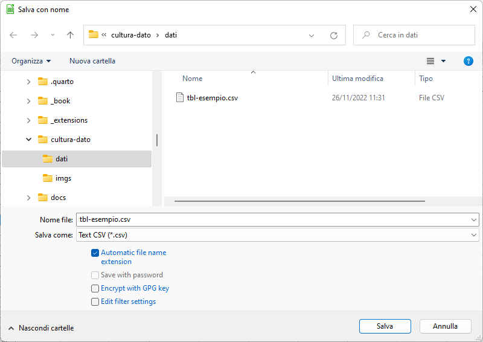
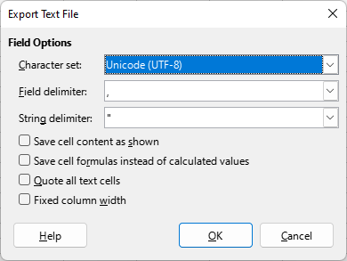
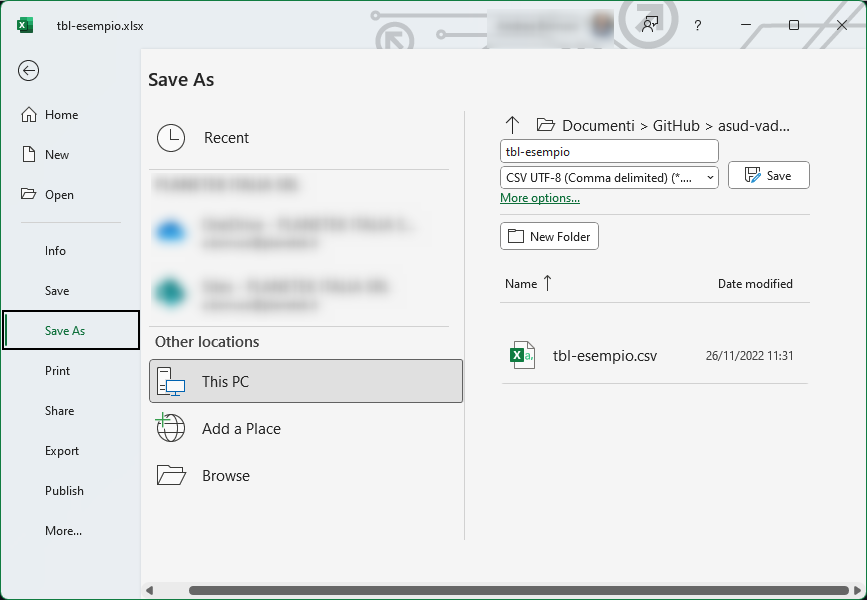
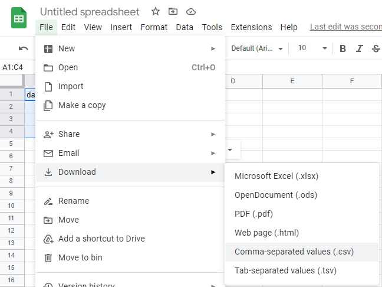
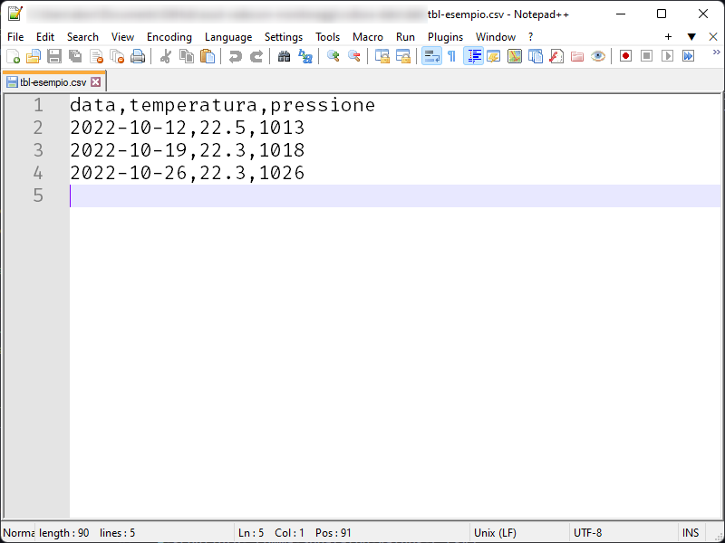

Creare un file CSV
È molto semplice creare un file in formato CSV. A seguire alcune delle modalità per farlo.
Creare un file CSV con LibreOffice Calc
Questi i passi da seguire:
- scegliere nel menu
Filela voceSalva con nome;

- dare un nome al file e scegliere come formato
Testo CSV - apparirà poi questa finestra di dialogo

- scegliere come set di caratteri l’
Unicode (UTF-8), come separatore di campo la virgola,e come delimitatore di testo le virgolette". Lasciare le altre opzioni non selezionate. (come sotto); - salvare il file.
Creare un file CSV con Microsoft Excel
Questi i passi da seguire:
- attivare la procedura per “Salvare con nome”;
- sceglier il nome del file;
- scegliere come formato
CSV UTF-8 (delimitato da virgole); - salvare il file.
L’encoding sarà l’UTF-8 e il separatore di campo sarà la virgola ,.

Creare un file CSV con Google Sheets
Questi i passi da seguire:
- scegliere “Download” dal menu
File; - scegliere “Comma Separated Values (.csv)”;
- salvare il file.
L’encoding sarà l’UTF-8 e il separatore di campo sarà la virgola ,.

Creare un file CSV “a mano”
Un file CSV è un file di testo, quindi si può “scrivere” usando un editor di testo e poi salvando con nome.
Però è scosigliato perché è facile commettere qualche errore (ad esempio dimenticare un separatore di colonna) e creare un file non valido.
